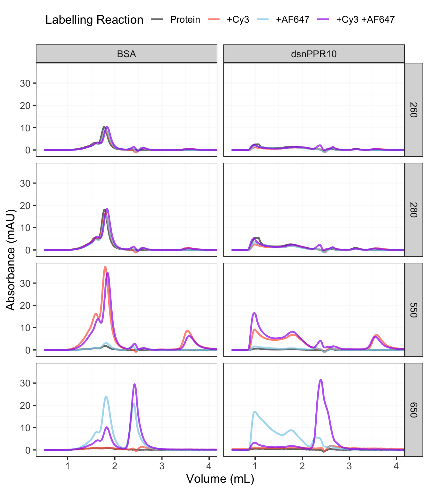
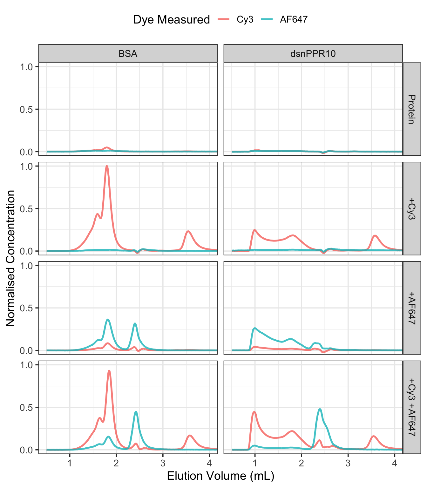

Testing the Efficacy of the AF647 in Labelling
Introduction
In the previous attempt at in labelling in previous attempt I was unsuccessful in labelling the protein with any amount of AF647. I had tested both 1, 1.5 and 2 times the ratio of AF647 to Cy3, to account for inefficiencies in labelling. In this experiment I conducted labelling with equimolar concentrations of Cy3 and AF647, but also labelled the the protein with either by itself as well. As a control I also conducted the labelling experiment on BSA, which has a free cysteine that is solvent exposed and able to react with maleimide dyes.
Read in the Chromatograms
fl <- list.files(here("data/sec"), pattern = "20220826", full.names = TRUE)
dat <- tibble(
file = fl
)
dat <- dat |>
separate(
col = file,
into = c(NA, NA, "sample", "dye1", "dye2"),
sep = "_",
remove = FALSE
) |>
mutate(
dye2 = str_remove(dye2, ".TXT"),
data = map(file, chromr::chrom_read_quadtech)
) |>
unnest(data)
dat |>
head()# A tibble: 6 × 10
file sample dye1 dye2 time volume name value unit wl
<chr> <chr> <chr> <chr> <dbl> <dbl> <chr> <dbl> <chr> <dbl>
1 /Users/brady/git/b… BSA Cy3 AF647 0 0 Quad… -0.00102 (280… 280
2 /Users/brady/git/b… BSA Cy3 AF647 0 0 Quad… -0.00122 (260… 260
3 /Users/brady/git/b… BSA Cy3 AF647 0 0 Quad… 0.825 (550… 550
4 /Users/brady/git/b… BSA Cy3 AF647 0 0 Quad… -0.557 (650… 650
5 /Users/brady/git/b… BSA Cy3 AF647 0 0 UV 0 AU NA
6 /Users/brady/git/b… BSA Cy3 AF647 0 0 Cond… 16.0 mS/cm NAAnalytical SEC
Testing the labelling effectiveness, using analytical SEC after incubation for labelling. I had 6 different labelling reactions, with two different proteins. Need to do a bit of cleanup, trimming the volume and assigning the samples.
dat <-
dat |>
group_by(file) |>
filter(volume > 0.5) |>
mutate(
value = value / max(value)
) |>
filter(!is.na(wl)) |>
mutate(
value = value * 1000,
dye = case_when(
dye1 == "Cy3" & dye2 == "AF647" ~ 4,
dye1 == "NA" & dye2 == "AF647" ~ 3,
dye1 == "Cy3" & dye2 == "NA" ~ 2,
TRUE ~ 1
),
dye = factor(dye, levels = 1:4, labels = c("Protein", "+Cy3" , "+AF647", "+Cy3 +AF647"))
)
dat |>
head()# A tibble: 6 × 11
# Groups: file [1]
file sample dye1 dye2 time volume name value unit wl dye
<chr> <chr> <chr> <chr> <dbl> <dbl> <chr> <dbl> <chr> <dbl> <fct>
1 /Users/brady… BSA Cy3 AF647 60 0.501 Quad… 0.00813 (280… 280 +Cy3…
2 /Users/brady… BSA Cy3 AF647 60 0.501 Quad… 0.00621 (260… 260 +Cy3…
3 /Users/brady… BSA Cy3 AF647 60 0.501 Quad… -0.00931 (550… 550 +Cy3…
4 /Users/brady… BSA Cy3 AF647 60 0.501 Quad… 0.0538 (650… 650 +Cy3…
5 /Users/brady… BSA Cy3 AF647 61 0.509 Quad… 0.00844 (280… 280 +Cy3…
6 /Users/brady… BSA Cy3 AF647 61 0.509 Quad… 0.00732 (260… 260 +Cy3…Plotting the adjusted absorbance levels.
Code
dat |>
ggplot(aes(volume, value, colour = dye)) +
geom_line(size = 1, alpha = 0.7) +
coord_cartesian(xlim = c(0.5, 4)) +
scale_colour_manual(
values = c(
"gray20",
"tomato",
"skyblue",
"purple"
)
) +
facet_grid(
cols = vars(sample),
rows = vars(wl)
) +
theme_bw(base_size = 14) +
theme(
panel.grid = element_line(colour = gray(0.8, 0.1)),
legend.position = "top"
) +
labs(
colour = "Labelling Reaction",
x = "Volume (mL)",
y = "Absorbance (mAU)"
) -> plt
plt
It seems that while on BSA with both dyes present, there is still some labelling effectiveness, but that this is not the case with the PPR protein.
Either BSA or dsnPPR10-C2, which either Cy3 only, AF647 only, or both Cy3 & AF647. It seems that with BSA and both dyes present, they labelled similarly, but in the case of dsnPPR10, when there was Cy3 added it basically didn’t label at all.
The presence of Cy3 is outcompeting the labelling of the dsnPPR10-C2, but not BSA?
Normalised Concentrations
To properly compare the presence of either dye, the ‘relative concentration’ was calculated according to the Beer-Lambert law (Equation 1 ).
\[ A = \epsilon b C \tag{1}\]
Where \(A\) is the absorbance (\(AU\)), \(\epsilon\) is the extinction coefficient (\(cm^{-1}M^{-1}\)), \(b\) is the path length (\(cm\)) and \(C\) is the concentration (\(molL^{-1}\)). The path length is the same for both and so can be set to 1 for calculating the relative concentrations with Equation 2.
\[ C = \frac{A}{\epsilon} \tag{2}\]
Code
dat |>
ungroup(file) |>
# select(-file) |>
filter(wl %in% c(550, 650)) |>
mutate(
value = value / if_else(wl == 650, 265000, 150000)
) |>
# group_by(sample) |>
mutate(
value = value / max(value)
) |>
ggplot(aes(volume, value, colour = factor(wl))) +
geom_line(size = 1, alpha = 0.8) +
facet_grid(
cols = vars(sample),
rows = vars(dye)
) +
theme_bw(base_size = 14) +
coord_cartesian(ylim = c(0, NA), xlim = c(0.5, 4)) +
scale_y_continuous(breaks = c(0, 0.5, 1)) +
scale_colour_discrete(labels = c("Cy3", "AF647")) +
labs(
x = "Elution Volume (mL)",
y = "Normalised Concentration",
colour = "Dye Measured"
) +
theme(
legend.position = "top"
)
Plotting relative concentrations shows that the ratios of AF647 to Cy3 is even worse than what is shown just from the absorbance readings.It seems that even just the presence of Cy3 mostly completely out-competes the AF647 for efficacy in labelling of either protein.
Page built on: 📆 2022-09-16 ‒ 🕢 21:00:06